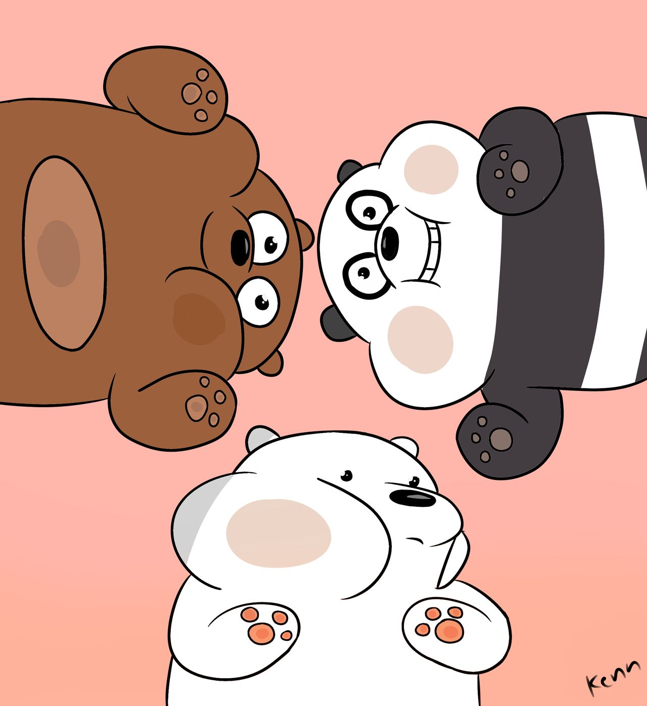

Who are they?
Three brother bears awkwardly attempt to find their place in civilized society. Whether they're looking for food, trying to make human friends, or scheming to become famous on the internet.
Grizzly--Panda--Ice Bear
Get to know them!
Grizzly
- Very friendly
- Likes to talk a lot
- loves to eat
Panda
- Always on phone
- Loves anime
- Gets sad and has anxiety
Ice Bear
- Quiet
- Knows how to cook and speak different languages
- Really Chill
Their friends
We Bare Bears' Friends. Click the names to know more about them.